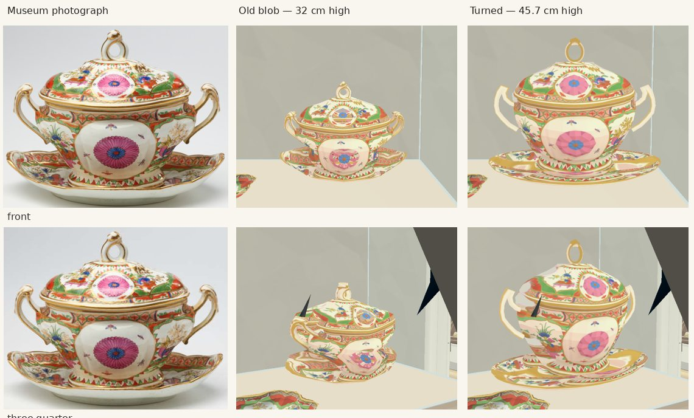
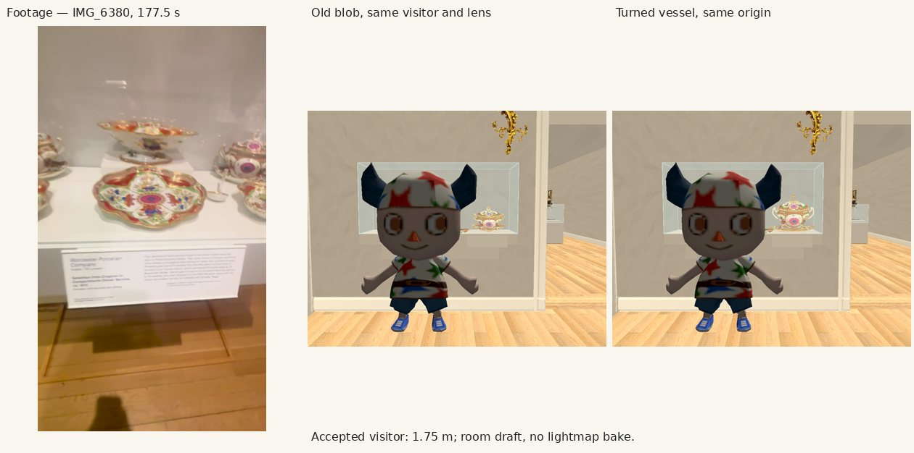
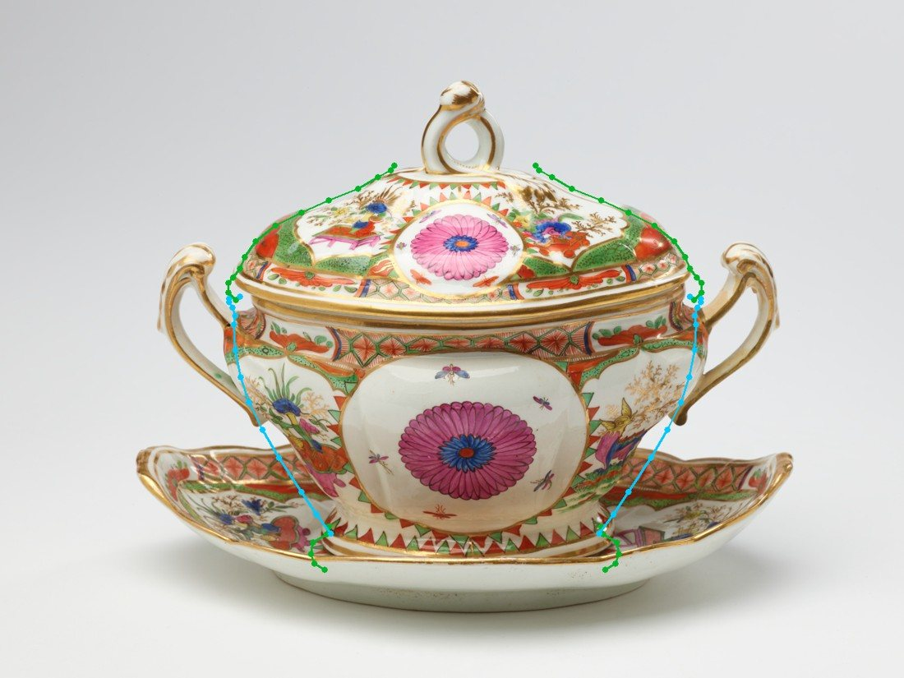

2017.74.39.18a-c. Museum photograph, old blob, new turned vessel. Sources only; unbaked room draft. Open handles, separate lid/foot/stand; measured whole size 55.9 × 45.7 × 35.6 cm. Original placement.


Still simplified: handle scrolls and lid terminal; front decoration repeats on the rear and stretches around the sides. Catalogue sizes conflict with filmed proportions. See NOTES.md and the 32-work list.
